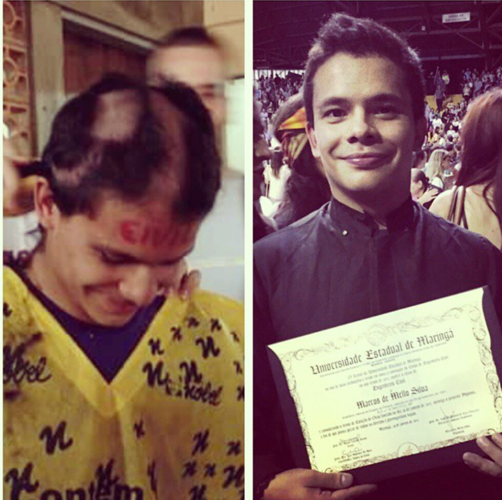
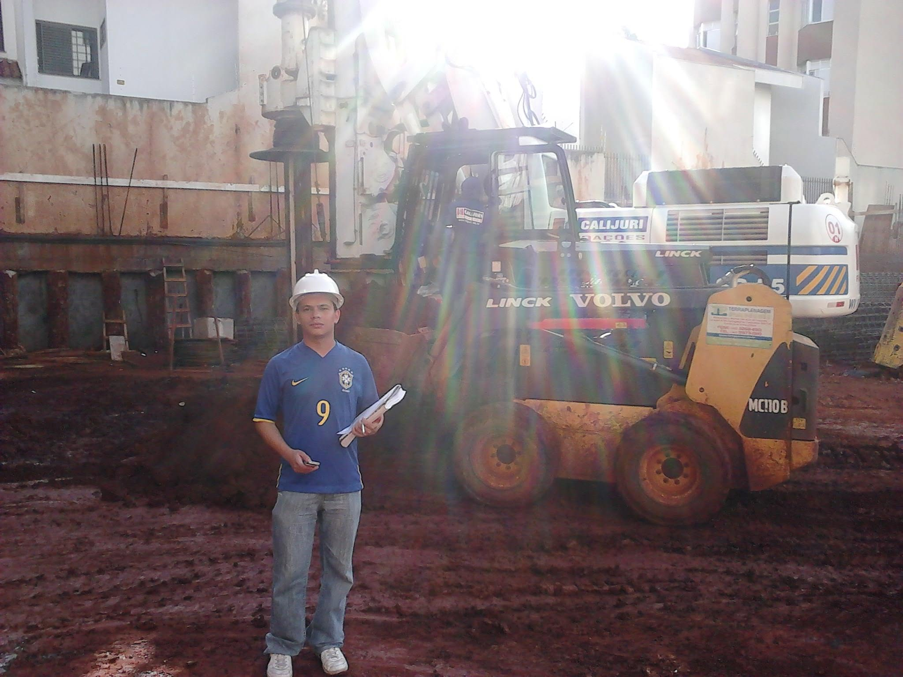
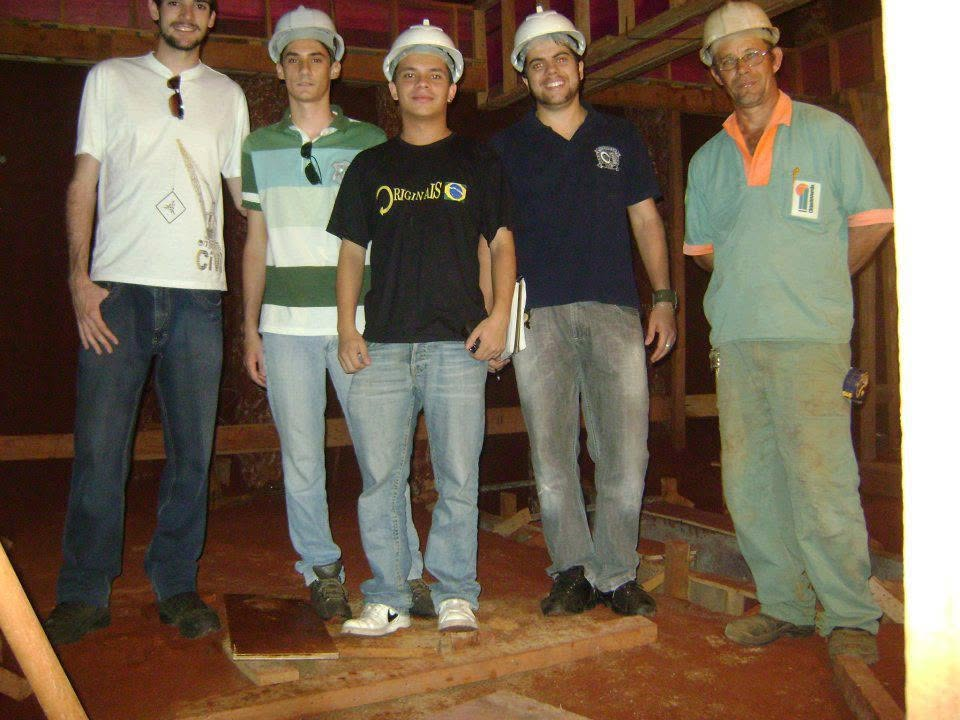
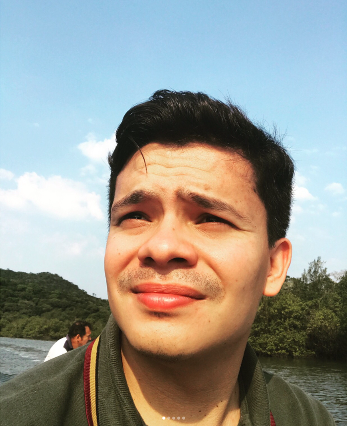
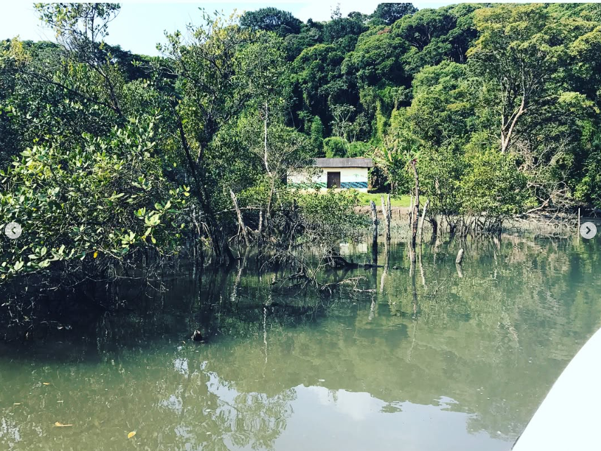
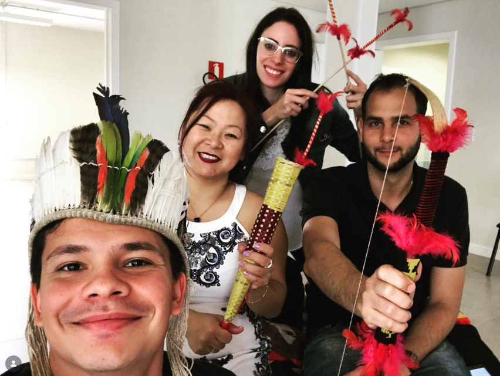
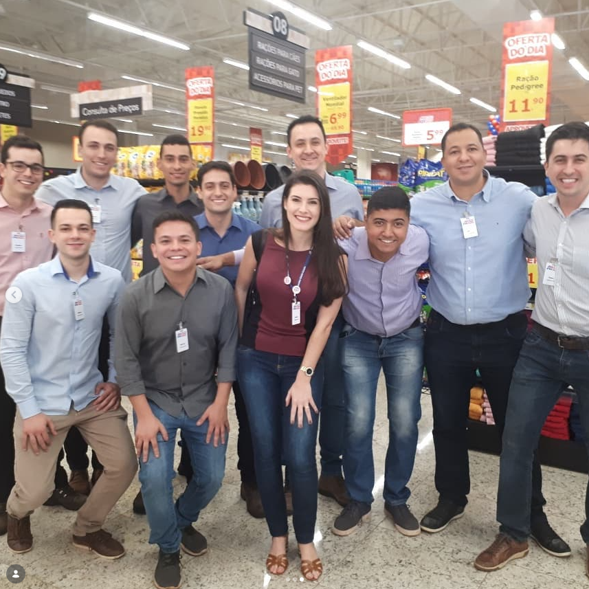
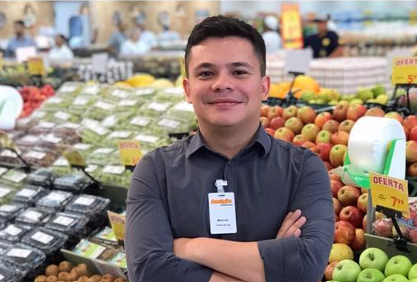
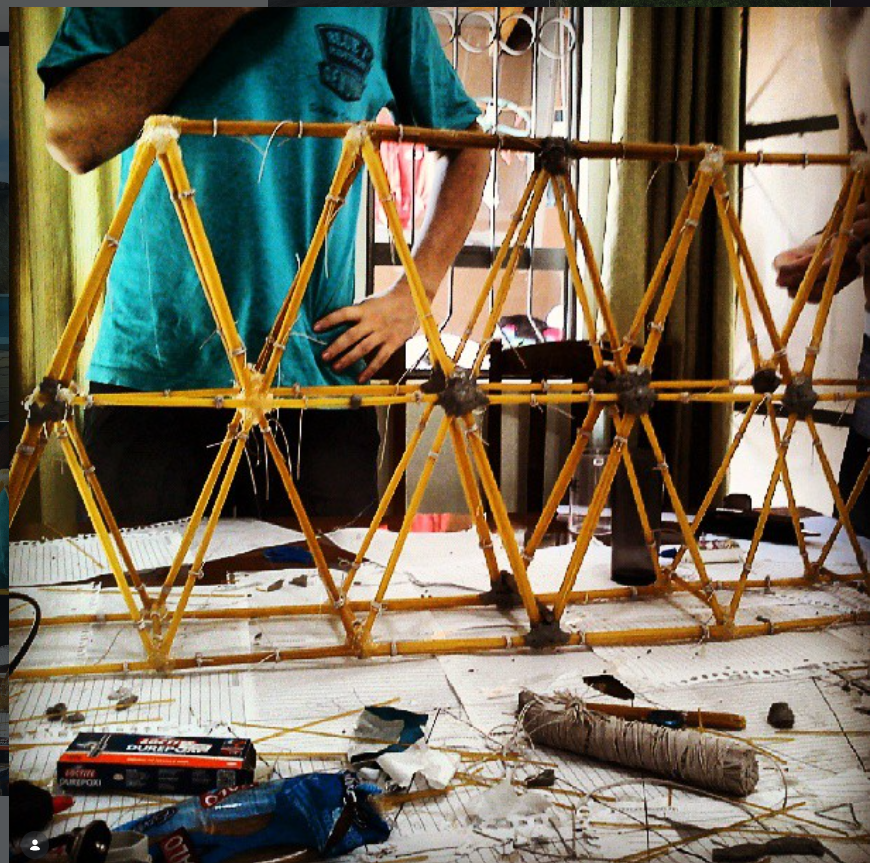

Processo administrativo
Nº 010/2026
Assunto
Trajetória técnica do requerente
Requerente
Marcos de Mello Silva
Órgão de origem
DEMELLO Engenharia
Vara
1ª de Bom Senso e Prazo Cumprido
A DEMELLO é nova. O repertório do requerente, não. Seguem, em ordem cronológica, as movimentações que instruem este processo — juntadas aos autos sem edição de mérito.
Movimentações processuais
2010–2014
Engenharia Civil, UEM
Cinco anos pra aprender o que a faculdade ensina. O resto começa agora.



2014–2018
Água, esgoto e estrada em lugar que GPS não confia
120 aldeias indígenas, 22 cidades, 80 polos de EaD Brasil afora. Projeto que não sai do papel em lugar sem sinal de celular também é projeto — só que ninguém avisa isso na faculdade.



2018
Trainee, sem crachá de "chefe" ainda
Dez meses pra aprender, na prática, que liderar não é dar ordem — é aguentar bronca de loja lotada e não perder o jogo de cintura.

2019
Gerente de Loja
Gerenciar um supermercado com 15 mil preços e 120 pessoas é punk. RH, estoque, indicador, fiscalização, inauguração — tudo junto, tudo urgente.

2020
Coordenador de Inteligência e Processos Logísticos
Dois anos e quatro meses decidindo onde abrir Centro de Distribuição e como não deixar estoque virar prejuízo — enquanto uma pandemia bagunçava toda logística do país.
2022
Coordenador de Logística e Projetos
Trocar de ERP com a empresa funcionando é trocar pneu com o carro andando. Deu certo.
2022–2023
Gerente de Logística e Projetos
Negociar frete, mapear processo, cortar custo — a mesma lógica de "achar o gargalo antes que ele te ache" que hoje mora em cada projeto da DEMELLO.
2024–2026
De volta pra engenharia
Gerente de projetos, depois engenheiro civil de novo — fechando o ciclo com repertório que a maioria dos engenheiros nunca teve.

Vistos, etc. Diante do exposto, julgo procedente o pedido e decido: DEFERIDO. A favor da liberdade.
Quer entender como esse repertório entra em cada projeto?
Sem precisar abrir um novo processo.